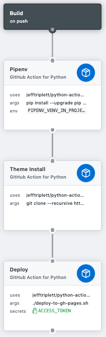

Deployment on Github Pages
I have used the Github Actions (right now in beta) to deploy the static site produced by Pelican to the github-pages branch of this repo. Here is the workflow:
workflow "Build" {
on = "push"
resolves = [
"Deploy",
]
}
action "Pipenv" {
args = "pip install --upgrade pip && pip install pipenv && pipenv install"
uses = "jefftriplett/python-actions@master"
env = {
PIPENV_VENV_IN_PROJECT = "true"
}
}
action "Theme Install" {
args = "git clone --recursive https://github.com/getpelican/pelican-themes themes"
uses = "jefftriplett/python-actions@master"
needs = ["Pipenv"]
}
action "Deploy" {
args = "./deploy-to-gh-pages.sh"
uses = "jefftriplett/python-actions@master"
needs = ["Pipenv", "Theme Install"]
secrets = ["ACCESS_TOKEN"]
}
This page is an explainer on how all of that comes together.
The Dockerfile
Github actions uses Docker containerization at basically every step. The idea is that you build a container and can
run arbitrary commands within it to do whatever you want. In this case, we're using it to generate the static site
using Pelican and store that in the gh-pages branch of the repo.
There's a whole marketplace of Github action docker containers, including an action to publish a static site to Github pages! I wanted to learn how this worked, so I opted to start with with a generic python container and to write my own scripts on top of it (borrowing heavily from published actions).
Above, you can see I am using an action specified by the uses clause, jefftriplett/python-actions@master, which provides a python 3.6 enviornment with all the basics (pip, git, etc). The Dockerfile's entry point is sh -c "$*", so we can pass in arbitrary shell commands to it.
The Workflow
In the end, we want to have a copy of the static site committed to the gh-pages branch of this repo. To do that, we need do install Pelican and all the other python requirements. We also need copy over the site theme to the top level of the repo.
I'm using Pipenv to handle requirements, and to pipenv install we need to have installed pipenv already.
So the steps taken are:
- Install pipenv:
pip install pipenv. - Install the site requirements:
pipenv install. - Install the theme to the correct place:
git clone --recursive https://github.com/getpelican/pelican-themes themes - Build a copy of the static site:
make publish - Commit the static site files to the
gh-pagesbranch, which Github will kindly auto-deploy.
I've broken that down into three stages. Graphically:

That's a graphical representation of the workflow I pasted above. You can see that the deployment step also requires a secret, ACCESS_KEY. This is because we'll be committing changes to a branch of the source repository. This is accomplished by creating a new personal access token and then adding it as a secret to your repository (settings -> secrets -> add a new secret).
deploy-to-gh-pages.sh
This is where a lot of the complexity lives. It has access to an env variable secret, ACCESS_KEY, and is a shell script included as a part of the repository which is executed after running the following two commands:
pip install --upgrade pip && pip install pipenv && pipenv installgit clone --recursive https://github.com/getpelican/pelican-themes themes
Those are also shell commands, so theoretically they could have been included as a part of this script. The only reason they were not is because they might also be used as prior steps for some other action we might write in the future (no matter what, you'll always want your pipenv set up!).
So that's the context this script is running in. Here's the script:
1 2 3 4 5 6 7 8 9 10 11 12 13 14 15 16 17 18 19 20 21 22 23 24 25 26 27 28 29 30 31 32 33 34 35 36 37 38 39 40 41 42 43 44 45 46 47 48 49 50 51 52 53 54 55 56 57 58 59 | #!/bin/bash
if [ -z "$ACCESS_TOKEN" ]
then
echo "No access token!"
exit 1
fi
FOLDER='output'
BASE_BRANCH='master'
BRANCH='gh-pages'
COMMIT_EMAIL="${GITHUB_ACTOR}@users.noreply.github.com"
REPOSITORY_PATH="https://${ACCESS_TOKEN}@github.com/${GITHUB_REPOSITORY}.git"
echo '----- Deploy Settings -----'
echo "* REPO: $GITHUB_REPOSITORY"
echo "* ACTOR: $GITHUB_ACTOR"
echo "* BRANCH: $BRANCH"
echo "* BASE_BRANCH: $BASE_BRANCH"
echo "* COMMIT_EMAIL: $COMMIT_EMAIL"
echo "* GITHUB_REPOSITORY: $GITHUB_REPOSITORY"
echo "* FOLDER: $FOLDER"
echo '----- Configuring git -----'
git init && \
git config --global user.email "${COMMIT_EMAIL}" && \
git config --global user.name "${GITHUB_ACTOR}"
echo "----- Checking on $BRANCH branch -----"
if [ "$(git ls-remote --heads "$REPOSITORY_PATH" "$BRANCH" | wc -l)" -eq 0 ];
then
echo "Creating remote branch ${BRANCH} as it doesn't exist..."
git checkout "$BASE_BRANCH" && \
git checkout --orphan $BRANCH && \
git rm -rf . && \
echo 'just creating the branch...' > README.md && \
git add README.md && \
git commit -m "Initial ${BRANCH} commit" && \
git push $REPOSITORY_PATH $BRANCH
fi
git checkout "$BASE_BRANCH"
echo '----- Making HTML -----'
make publish
echo '----- Deploying -----'
git add -f $FOLDER && \
git commit -m "Deploy to ${BRANCH} - $(date +"%T")" && \
git push $REPOSITORY_PATH `git subtree split --prefix $FOLDER $BASE_BRANCH`:$BRANCH --force
echo "Deployment succesful!"
|
You can see that most of the work is done with various git commands which probably nobody will ever understand. I'll break it down and explain as much as I understand (not a lot).
Configuring git
git init && \
git config --global user.email "${COMMIT_EMAIL}" && \
git config --global user.name "${GITHUB_ACTOR}"
Remember that this is running in a newly-created docker container, it doesn't know about your git settings so we need to set that up.
Create the gh-pages branch
if [ "$(git ls-remote --heads "$REPOSITORY_PATH" "$BRANCH" | wc -l)" -eq 0 ];
then
echo "Creating remote branch ${BRANCH} as it doesn't exist..."
git checkout "$BASE_BRANCH" && \
git checkout --orphan $BRANCH && \
git rm -rf . && \
echo 'just creating the branch...' > README.md && \
git add README.md && \
git commit -m "Initial ${BRANCH} commit" && \
git push $REPOSITORY_PATH $BRANCH
fi
git checkout "$BASE_BRANCH"
This part checks if the gh-pages branch exists. If not, it is created with a single committed file, README.md. At the end we checkout the base branch, master, because we'll need to generate the static site.
Making the static site
make publish
This just uses the Makefile that was created during pelican-quickstart to generate a production ready website within a directory called output.
Deployment
git add -f $FOLDER && \
git commit -m "Deploy to ${BRANCH} - $(date +"%T")" && \
git push $REPOSITORY_PATH `git subtree split --prefix $FOLDER $BASE_BRANCH`:$BRANCH --force
The first two lines here are the usual git flow: add and commit. The push line, well, wow. What even is that?
The git subtree split part lets you split your repo into two: adding one folder to a different branch then the one you're currently on. The idea is that the output folder belongs to the gh-pages branch, but everything else lives on master. So that line is pushing the splitted subtree on master to the gh-pages branch. All the weird syntax just serves to formalize that mapping. I simply adapted that line which was written by someone much smarter than me (original source).